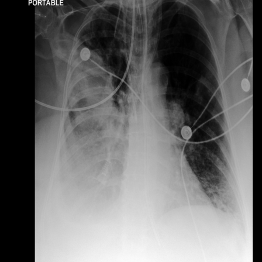
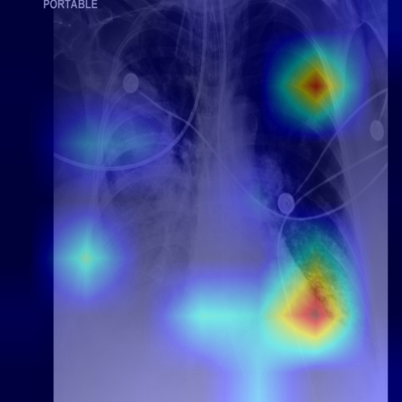
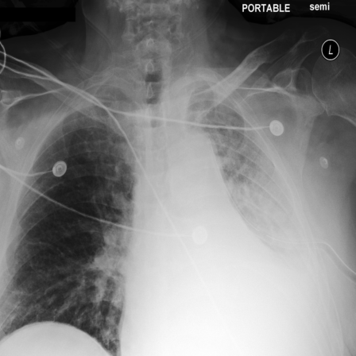
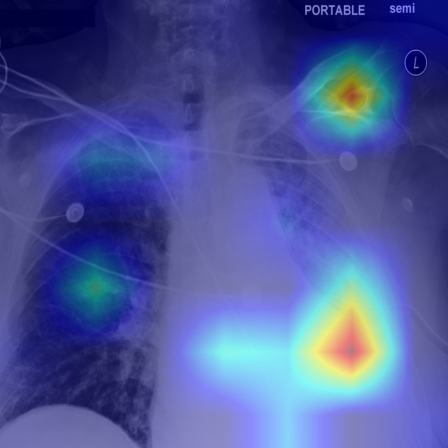

| Radiograph | Ground Truth | META-CXR (PN) | META-CXR (PNU) | Stacked Attention Map |
|---|---|---|---|---|
 | Abnormalities: Positive: Cardiomegaly, Lung Opacity, Lung Lesion, Consolidation, Pleural Effusion, Support Devices Uncertain: Edema, Atelectasis Negative: Rest Report: ap chest compared to <unk>: the full extent of opacification in the right hemithorax improved between <unk> and <unk> and has not changed appreciably since, including a well- circumscribed mass-like lesion above the level of the right hilus, some of which could be pleural fluid loculated in the fissure. the extent of right lower lobe consolidation has improved since <unk>, but there is probably persistent moderate right pleural effusion. nodular lesions which developed in the left lung on <unk>, are probably small lung abscesses--<unk> either hematogenously or transbronchially--<unk> several appear to be cavitated. they are smaller today than on <unk>. they may have been. peribronchial opacification developing at the base of the left lung is nonspecific. it could be mild edema or atelectasis but needs to be followed to exclude pneumonia, particularly due to aspiration. the heart is, an... | Predicted Abnormalities: Positive: Cardiomegaly, Lung Opacity, Atelectasis, Support Devices Uncertain: None Negative: Rest Report: In comparison with the study of ___, there is little overall change. Again there is enlargement of the cardiac silhouette with some indistinctness of pulmonary vessels consistent with elevated pulmonary venous pressure. Bibasilar opacifications are consistent with atelectasis. Central catheter etends to the mid-to-lower portion of the SVC. | Predicted Abnormalities: Positive: Atelectasis, Support Devices Uncertain: None Negative: Rest Report: In comparison with the study of ___, there is little overall change. Again there is evidence of previous right upper lobectomy with a right chest tube in place. There is some increased opacification at the right base, most likely reflecting atelectasis. |  |
 | Abnormalities: Positive: Cardiomegaly, Lung Opacity, Edema, Atelectasis, Pleural Effusion, Support Devices Uncertain: None Negative: Rest Report: compared to chest radiographs since <unk>, and chest ct on <unk>. left lower hemi thorax remains uniformly opacified, probably a combination of left lower lobe collapse and indeterminate volume of left pleural fluid. there is no pneumothorax. apical left pleural drain unchanged in position. cardiac silhouette very large, stable. mild vascular congestion borderline interstitial edema in the right lung are slightly more severe. | Predicted Abnormalities: Positive: Cardiomegaly, Lung Opacity, Atelectasis, Pleural Effusion, Support Devices Uncertain: None Negative: Rest Report: Right-sided PICC terminates in the low SVC without evidence of pneumothora. There is persistent blunting of the right costophrenic angle, which may be due to a small pleural effusion with overlying atelectasis. Mild basilar atelectasis is seen. The cardiac silhouette is mildly enlarged. The aorta is calcified and elevated, similar to prior. | Predicted Abnormalities: Positive: Lung Opacity, Atelectasis, Pleural Effusion, Support Devices Uncertain: None Negative: Rest Report: In comparison with the study of ___, there is little overall change. Again there is evidence of prior right upper lobectomy with residual opacification at the right base consistent with atelectasis and small effusion. The left lung is essentially clear. Central catheter again remains in place. |  |